Onze Partners
Muziek op de dommel wordt mede mogelijk gemaakt door de volgende sponsoren en partners.
Sponsors en subsidiënten

Studentenstad Eindhoven 2010
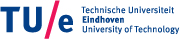
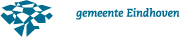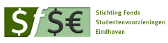

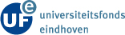
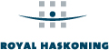
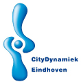
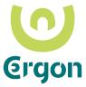
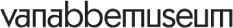
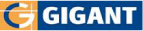
 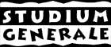
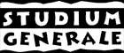
Partners
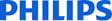
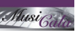
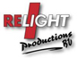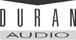
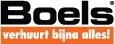
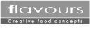
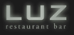
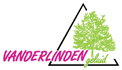
ESMG Quadrivium heeft veel ervaring met het organiseren van complexe projecten en onderkent daarom het belang van samenwerken met professionele partijen om dit project mogelijk te maken. Vooral daar dit een interregionaal project betreft, waarbij ook nog samengewerkt wordt met diverse bouwbedrijven in het ontwerpproces, heeft Quadrivium op dit moment al veel contacten waarmee zij intensief samenwerkt. Onze belangrijkste partners op dit moment zijn:
- CityDynamiek Eindhoven
- Gemeente Eindhoven
- Technische Universiteit Eindhoven
- TU/e Faculteit Bouwkunde
- Studium Generale
- Bouwkundewinkel
- Gigant Stagebuilders
- MusiCala
- Eindhoven Studentenstad
- Het Van Abbemuseum
- Museumrestaurant Flavours
- Waterschap de Dommel